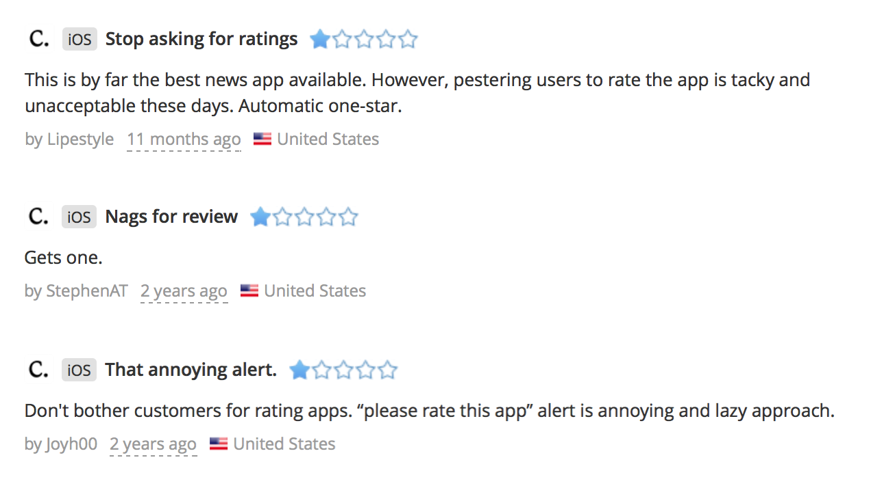
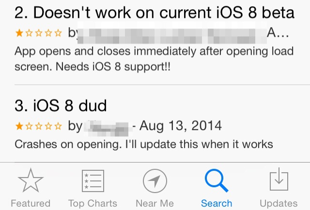
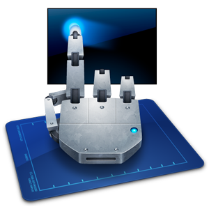
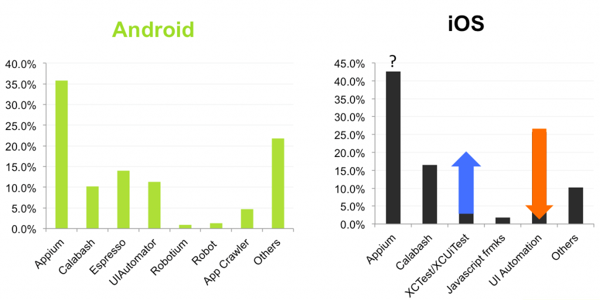
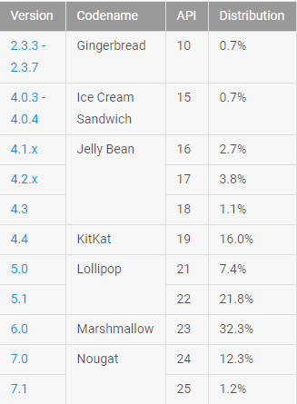
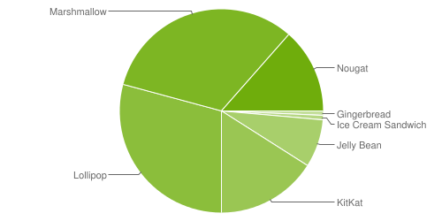
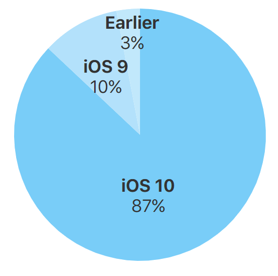
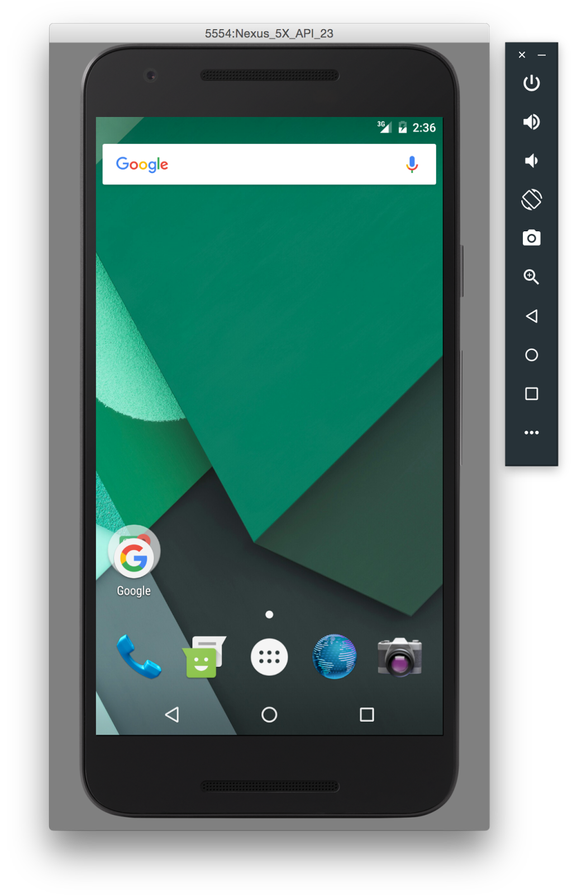

Who am I?
Krzysztof Kaczmarek
Software Engineer at
What do I do?
Java Development
Test Automation
DevOps
Intro to Mobile Automation
Web Testing
vs
Mobile Testing


What should we test?
Localization
Date
Time
Networking
Performance
Behavior under stress
Interruptions
Security
Usability
Resolution
Orientation
Sensors
Certification
And probably a thousand other things...

UIAutomator


Fragmentation
We have seen 24,093 distinct devices download our app in the past few months.
In our report last year we saw 18,796.
In 2013 we saw 11,868.
OPENSIGNAL, 2015



✓ cost
✓ availability
✗/✓ performance
✗ reliability

✓ reliability
✓ consistence
✓ is a real device
✗ cost
Cloud


https://github.com/krzkacz/techtalk